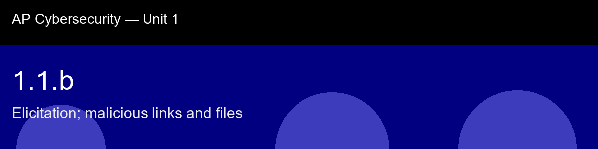

1.1.b, Elicitation; malicious links and files
Before class today. Social engineering has two operational phases. The first is pressure, the psychological levers
covered in 1.1.a. The second is extraction and delivery: getting the victim to surrender
information through conversation, or to open something dangerous.
The intuition to hold onto: Think of elicitation and malicious links as two different keys to the same lock. Elicitation gets the attacker information; links and files get them execution. A useful intuition: elicitation is slow and social, it works over minutes or days of conversation, and each fragment feels harmless in isolation, which is exactly why it's dangerous. Link and file attacks are fast and technical, one click, one moment of inattention, and it's over. Defending against the first requires a habit of mind (need-to-know discipline); defending against the second requires a habit of hand (hover before you click, check the extension before you open).
A myth worth busting before we start: "HTTPS means the site is safe." → HTTPS only means the connection is encrypted. Attackers routinely obtain free TLS certificates for malicious domains; the padlock proves encryption, not legitimacy.
Today's goal: Describe how elicitation extracts sensitive information through conversation, and you can identify the technical indicators that distinguish a malicious link or file from a legitimate one.
Handout: pre-lecture-handout.docx.

## 1.1.b, Elicitation; malicious links and files
**Before class today.** Social engineering has two operational phases. The first is pressure, the psychological levers
covered in 1.1.a. The second is extraction and delivery: getting the victim to surrender
information through conversation, or to open something dangerous.
**The intuition to hold onto:** Think of elicitation and malicious links as two different keys to the same lock. Elicitation gets the attacker information; links and files get them execution. A useful intuition: elicitation is *slow and social*, it works over minutes or days of conversation, and each fragment feels harmless in isolation, which is exactly why it's dangerous. Link and file attacks are *fast and technical*, one click, one moment of inattention, and it's over. Defending against the first requires a habit of mind (need-to-know discipline); defending against the second requires a habit of hand (hover before you click, check the extension before you open).
**A myth worth busting before we start:** "HTTPS means the site is safe." → HTTPS only means the connection is encrypted. Attackers routinely obtain free TLS certificates for malicious domains; the padlock proves encryption, not legitimacy.
**Today's goal:** Describe how elicitation extracts sensitive information through conversation, and you can identify the technical indicators that distinguish a malicious link or file from a legitimate one.
Handout: `pre-lecture-handout.docx`.